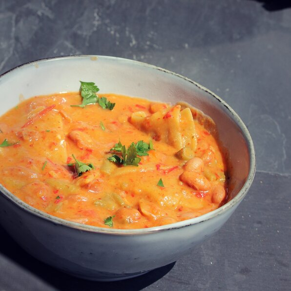

Recipe for chickpea maltagliati e fagioli

Description
Chickpea lasagna sheets are broken into "badly cut" (maltagliati) pieces and cooked with cranberry beans for a twist on the traditional Italian stew.
Ingredients
- 1 cup dried cranberry beans
- 2 sprigs fresh sage
- 1 sprig fresh rosemary
- 1 bay leaf
- kitchen twine
- 4 ounces chickpea lasagna sheets
- 2 tablespoons olive oil
- ½ cup diced onion
- ½ cup diced carrots
- ½ cup diced red bell pepper
- 20 fresh green beans, cut into 1-inch pieces
- 10 cherry tomatoes, quartered
- 1 clove garlic, minced
- 1 bird's eye chile, minced (Optional)
- 4 cups water (Optional)
- 1 cube vegetable bouillon
- salt and ground black pepper to taste
- 2 cups boiling water (Optional)
- 4 teaspoons extra-virgin olive oil
Directions
- Soak beans in water, 8 hours to overnight.
- Drain beans and briefly rinse under cold water. Allow to drain.
- Tie sage, rosemary, and bay leaf with kitchen twine. Set aside. Break lasagna sheets into uneven pieces that are relatively the same size.
- Heat a stovetop pressure cooker over medium-high heat. Add 2 tablespoons oil, onion, carrots, and red bell pepper; stir until onion is translucent. Add drained beans, herb bundle, green beans, cherry tomatoes, garlic, and chile pepper. Stir to ensure beans are evenly distributed. Add 4 cups water and bouillon cube. Secure the lid and bring to pressure. Cook for 8 minutes from the first whistle.
- Turn off heat and allow pressure to release naturally according to manufacturer's instructions. Remove cover and discard herb bundle. Season stew with salt and pepper. Bring to a boil. Add pasta pieces a few at a time, stirring constantly to avoid sticking.
- Add boiling water a little at a time if the stew becomes too thick. Stir frequently until pasta is tender yet firm to the bite, about 8 minutes. Ladle into 4 bowls. Top each bowl with 1 teaspoon extra-virgin olive oil.